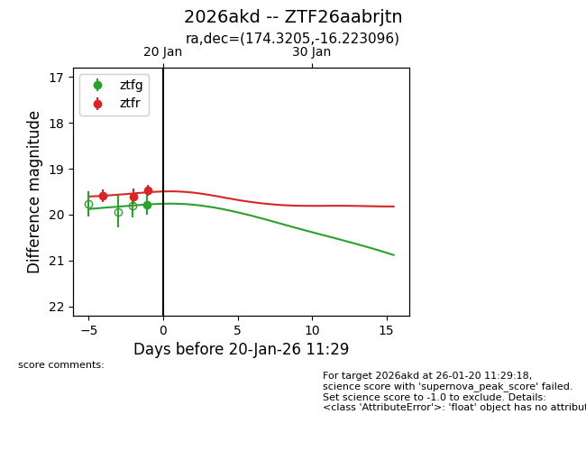
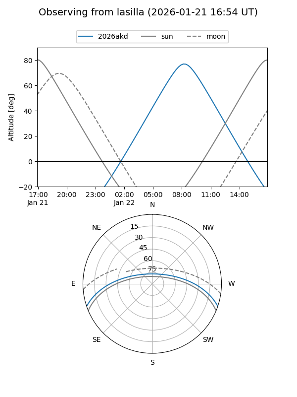
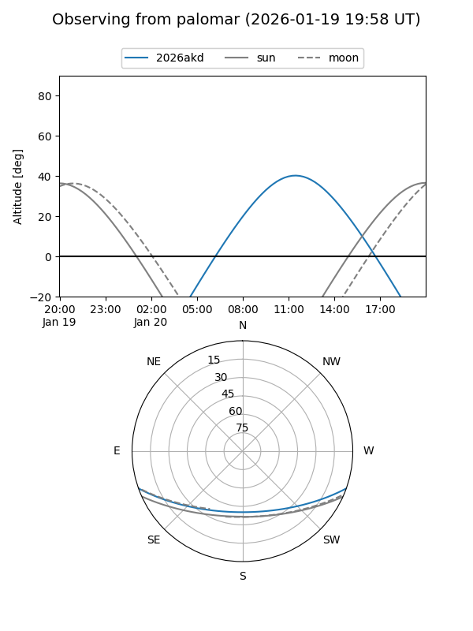
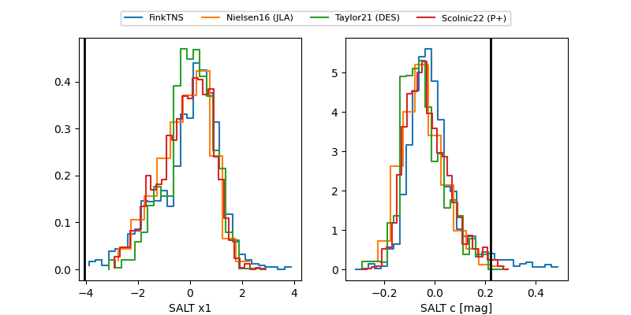

2026akd
Target 2026akd at 2026-01-18 11:50
Aliases and brokers:
FINK: link
Lasair: link
ALeRCE: link
TNS: link
YSE: link
alt names
ZTF26aabrjtn (ztf,fink_ztf)
2026akd (tns,yse)
Coordinates:
equatorial (ra, dec) = 174.3205,-16.22310
equatorial (HMS+DMS) = 11:37:16.93,-16:13:23.15
galactic (l, b) = (278.2321,+43.06388)
Flags:
Photometry:
last ztfr=19.60
2 ztfr detections
Lightcurve

Visibility


Additional plots
